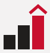

Varianta 1
Acoperișul
Un acoperiș roșu peste o casă desenată din câteva linii, lângă numele scris cu majuscule rare. E cea mai apropiată de semnul pus acum pe landing page.
Ce are bun
- Se recunoaște imediat ca agenție imobiliară.
- Majusculele rare dau un aer așezat, de firmă serioasă.
De ținut minte
- Numele cu majuscule ocupă mult loc pe lățime, deci pe telefon iese mai mic.
Varianta 2
Monograma
Un „A” care e și acoperiș, cu o ușă în mijloc, într-un pătrat roșu. Numele e scris normal, iar rândul de dedesubt e în italic.
Ce are bun
- Pătratul roșu se vede cel mai bine dintre toate, mai ales ca iconiță.
- Merge singur ca poză de profil pe Facebook și Instagram.
De ținut minte
- Un „A” în pătrat e o idee folosită des, deci e mai puțin unică.
Varianta 3
Treptele
Trei trepte care urcă, adică ce înseamnă „ascendent”, iar ultima are un acoperiș. Numele e cu litere mici, mai prietenos.

64 pxCe are bun
- Spune povestea numelui: urcare, creștere.
- Literele mici fac marca mai caldă și mai modernă.
De ținut minte
- Legătura cu casele e mai puțin directă decât la celelalte două.
Ales: varianta 1, Acoperișul. E pusă în antetul landing page-ului și al site-ului, iar iconița apare în tab-ul browserului.
Fișierele finale, cu literele transformate în contur, sunt în folderul logo/final: logo-ul pentru fond deschis și pentru fond închis, fiecare cu și fără rândul „Agenție imobiliară · Iași”, plus iconița. Arată la fel în orice program, chiar și fără internet.